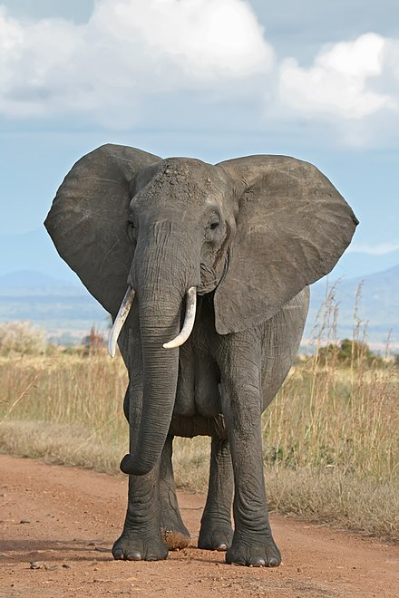
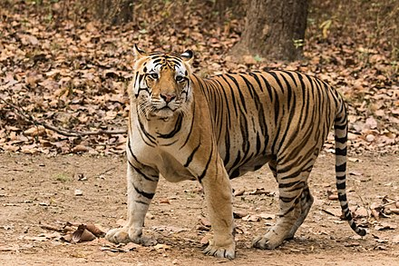
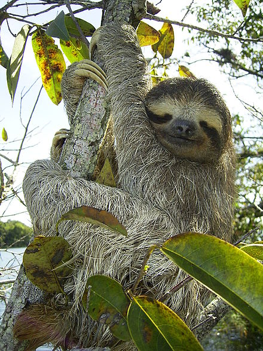

Elephants!
The elephants are the large mammals forming the family Elephantidae in the order Proboscidea. Three species are currently recognised: the African bush elephant (Loxodonta africana), the African forest elephant (L. cyclotis), and the Asian elephant (Elephas maximus). Elephants are scattered throughout sub-Saharan Africa, South Asia, and Southeast Asia. Elephantidae is the only surviving family of the order Proboscidea; other, now extinct, members of the order include deinotheres, gomphotheres, mammoths, and mastodons.
Tigers!
The tiger (Panthera tigris) is the largest cat species, most recognizable for its pattern of dark vertical stripes on reddish-orange fur with a lighter underside. The species is classified in the genus Panthera with the lion, jaguar, leopard, and snow leopard. It is an apex predator, primarily preying on ungulates such as deer and bovids. It is territorial and generally a solitary but social predator, often requiring large contiguous areas of habitat that support its prey requirements. This, coupled with the fact that it is indigenous to some of the more densely populated places on Earth, has caused significant conflicts with humans.
Sloths!
Sloths are arboreal mammals noted for slowness of movement and for spending most of their lives hanging upside down in the trees of the tropical rainforests of South America and Central America. The six species are in two families: two-toed sloths and three-toed sloths. In spite of this traditional naming, all sloths actually have three toes. The two-toed sloths have two digits, or fingers, on each forelimb.